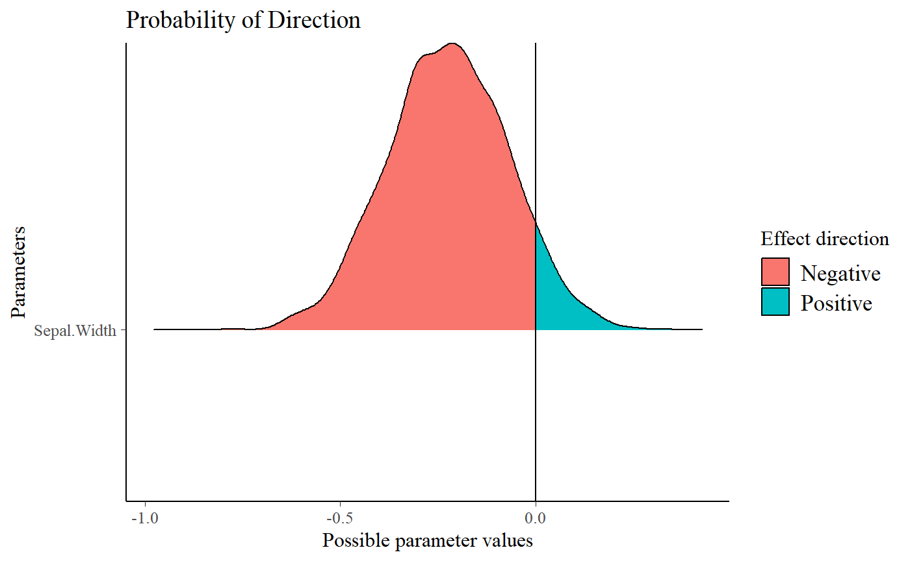
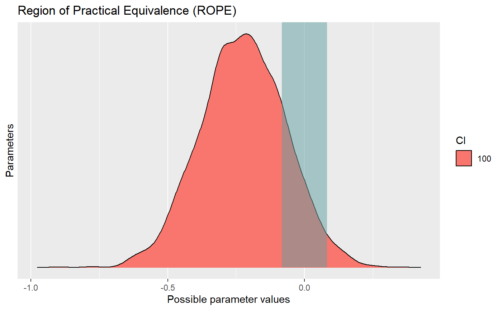
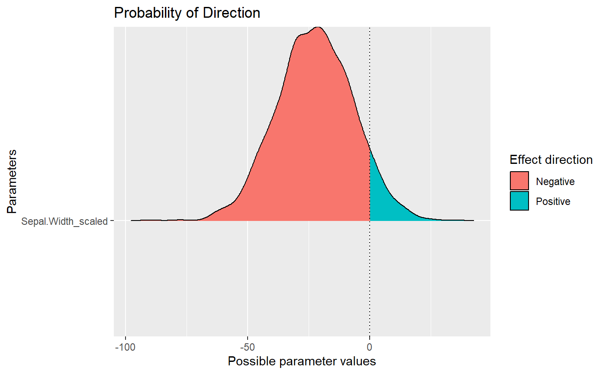
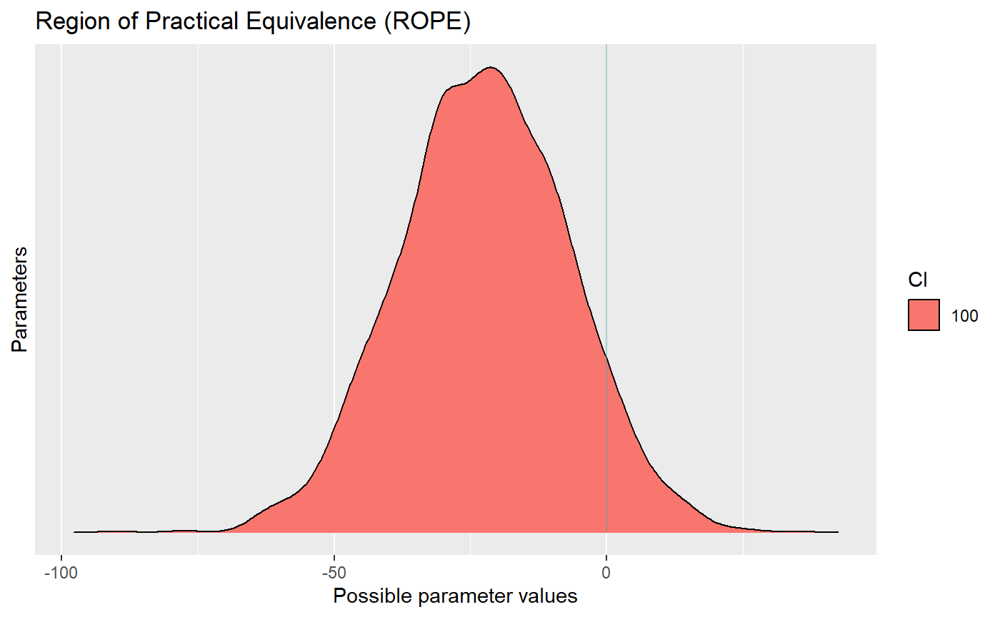

vignettes/region_of_practical_equivalence.Rmd
region_of_practical_equivalence.RmdThis vignette can be referred to by citing the package:
Unlike a frequentist approach, Bayesian inference is not based on statistical significance, where effects are tested against “zero”. Indeed, the Bayesian framework offers a probalistic view of the parameters, allowing to assess the uncertainty related to them. Thus, rather than concluding that an effect is present when it simply differs from zero, we would conclude that the probability of being outside a specific range that can be considered as “practically no effect” (i.e., a negligible magnitude) is sufficient. This range is called the region of practical equivalence (ROPE).
Indeed, statistically, the probability of a posterior distribution of being different from 0 does not make much sense (the probability of it being different from a single point being infinite). Therefore, the idea underlining ROPE is to let the user define an area around the null value enclosing values that are equivalent to the null value for practical purposes (Kruschke 2010, 2014; Kruschke, Aguinis, and Joo 2012).
The ROPE, being a region corresponding to a “null” hypothesis, is used for the equivalence test, to test whether a parameter is significant (in the sense of important enough to be cared about). This test is usually based on the “HDI+ROPE decision rule” (Kruschke 2014; Kruschke and Liddell 2018) to check whether parameter values should be accepted or rejected against an explicitly formulated “null hypothesis” (i.e., a ROPE). In other words, it checks the percentage of Credible Interval (CI) that is the null region (the ROPE). If this percentage is sufficiently low, the null hypothesis is rejected. If this percentage is sufficiently high, the null hypothesis is accepted.
Using the ROPE and the HDI as Credible Interval, Kruschke (2018) suggests using the percentage of the 95% HDI that falls within the ROPE as a decision rule. However, as the 89% HDI is considered a better choice (Kruschke 2014; McElreath 2014, 2018), bayestestR provides by default the percentage of the 89% HDI that falls within the ROPE.
However, preliminary data tend to suggest that using the percentage of the full posterior distribution, instead of a CI, might be more sensitive (especially do delineate highly significant effects). Thus, we recommend the user to consider using the full ROPE percentage (by setting ci = 1), which will return the portion of the entire posterior distribution in the ROPE.
If the HDI is completely outside the ROPE, the “null hypothesis” for this parameter is “rejected”. If the ROPE completely covers the HDI, i.e., all most credible values of a parameter are inside the region of practical equivalence, the null hypothesis is accepted. Else, it’s undecided whether to accept or reject the null hypothesis.
If the full ROPE is used (i.e., 100% of the HDI), then the null hypothesis is rejected or accepted if the percentage of the posterior within the ROPE is smaller than to 2.5% or greater than 97.5%. Desirable results are low proportions inside the ROPE (the closer to zero the better).
-0.1 to 0.1 of a standardized parameter (negligible effect size according to Cohen, 1988), which can be generalised for linear models to: \[[-0.1*SD_{y}, 0.1*SD_{y}]\].-0.055 to -0.055. For other models with binary outcome, it is strongly recommended to manually specify the rope argument. Currently, the same default is applied that for logistic models.-0.05, 0.05 is used, i.e., half the value of a negligible correlation as suggested by Cohen’s (1988) rules of thumb.-0.1, 0.1 is used to determine the ROPE limits, but it is strongly advised to specify it manually.However, keep in mind that unlike other indices of effect existence (such as the pd), the percentage in ROPE depend on the unit of its parameter, thus correct interpretation of the ROPE as representing a region of practical equivalence to zero is dependent on the scaling of the predictors.
library(rstanarm)
library(bayestestR)
library(see)
data <- iris # Use the iris data
model <- stan_glm(Sepal.Length ~ Sepal.Width, data=data) # Fit model>
> SAMPLING FOR MODEL 'continuous' NOW (CHAIN 1).
> Chain 1:
> Chain 1: Gradient evaluation took 0 seconds
> Chain 1: 1000 transitions using 10 leapfrog steps per transition would take 0 seconds.
> Chain 1: Adjust your expectations accordingly!
> Chain 1:
> Chain 1:
> Chain 1: Iteration: 1 / 2000 [ 0%] (Warmup)
> Chain 1: Iteration: 200 / 2000 [ 10%] (Warmup)
> Chain 1: Iteration: 400 / 2000 [ 20%] (Warmup)
> Chain 1: Iteration: 600 / 2000 [ 30%] (Warmup)
> Chain 1: Iteration: 800 / 2000 [ 40%] (Warmup)
> Chain 1: Iteration: 1000 / 2000 [ 50%] (Warmup)
> Chain 1: Iteration: 1001 / 2000 [ 50%] (Sampling)
> Chain 1: Iteration: 1200 / 2000 [ 60%] (Sampling)
> Chain 1: Iteration: 1400 / 2000 [ 70%] (Sampling)
> Chain 1: Iteration: 1600 / 2000 [ 80%] (Sampling)
> Chain 1: Iteration: 1800 / 2000 [ 90%] (Sampling)
> Chain 1: Iteration: 2000 / 2000 [100%] (Sampling)
> Chain 1:
> Chain 1: Elapsed Time: 0.07 seconds (Warm-up)
> Chain 1: 0.075 seconds (Sampling)
> Chain 1: 0.145 seconds (Total)
> Chain 1:
>
> SAMPLING FOR MODEL 'continuous' NOW (CHAIN 2).
> Chain 2:
> Chain 2: Gradient evaluation took 0 seconds
> Chain 2: 1000 transitions using 10 leapfrog steps per transition would take 0 seconds.
> Chain 2: Adjust your expectations accordingly!
> Chain 2:
> Chain 2:
> Chain 2: Iteration: 1 / 2000 [ 0%] (Warmup)
> Chain 2: Iteration: 200 / 2000 [ 10%] (Warmup)
> Chain 2: Iteration: 400 / 2000 [ 20%] (Warmup)
> Chain 2: Iteration: 600 / 2000 [ 30%] (Warmup)
> Chain 2: Iteration: 800 / 2000 [ 40%] (Warmup)
> Chain 2: Iteration: 1000 / 2000 [ 50%] (Warmup)
> Chain 2: Iteration: 1001 / 2000 [ 50%] (Sampling)
> Chain 2: Iteration: 1200 / 2000 [ 60%] (Sampling)
> Chain 2: Iteration: 1400 / 2000 [ 70%] (Sampling)
> Chain 2: Iteration: 1600 / 2000 [ 80%] (Sampling)
> Chain 2: Iteration: 1800 / 2000 [ 90%] (Sampling)
> Chain 2: Iteration: 2000 / 2000 [100%] (Sampling)
> Chain 2:
> Chain 2: Elapsed Time: 0.071 seconds (Warm-up)
> Chain 2: 0.072 seconds (Sampling)
> Chain 2: 0.143 seconds (Total)
> Chain 2:
>
> SAMPLING FOR MODEL 'continuous' NOW (CHAIN 3).
> Chain 3:
> Chain 3: Gradient evaluation took 0 seconds
> Chain 3: 1000 transitions using 10 leapfrog steps per transition would take 0 seconds.
> Chain 3: Adjust your expectations accordingly!
> Chain 3:
> Chain 3:
> Chain 3: Iteration: 1 / 2000 [ 0%] (Warmup)
> Chain 3: Iteration: 200 / 2000 [ 10%] (Warmup)
> Chain 3: Iteration: 400 / 2000 [ 20%] (Warmup)
> Chain 3: Iteration: 600 / 2000 [ 30%] (Warmup)
> Chain 3: Iteration: 800 / 2000 [ 40%] (Warmup)
> Chain 3: Iteration: 1000 / 2000 [ 50%] (Warmup)
> Chain 3: Iteration: 1001 / 2000 [ 50%] (Sampling)
> Chain 3: Iteration: 1200 / 2000 [ 60%] (Sampling)
> Chain 3: Iteration: 1400 / 2000 [ 70%] (Sampling)
> Chain 3: Iteration: 1600 / 2000 [ 80%] (Sampling)
> Chain 3: Iteration: 1800 / 2000 [ 90%] (Sampling)
> Chain 3: Iteration: 2000 / 2000 [100%] (Sampling)
> Chain 3:
> Chain 3: Elapsed Time: 0.068 seconds (Warm-up)
> Chain 3: 0.074 seconds (Sampling)
> Chain 3: 0.142 seconds (Total)
> Chain 3:
>
> SAMPLING FOR MODEL 'continuous' NOW (CHAIN 4).
> Chain 4:
> Chain 4: Gradient evaluation took 0 seconds
> Chain 4: 1000 transitions using 10 leapfrog steps per transition would take 0 seconds.
> Chain 4: Adjust your expectations accordingly!
> Chain 4:
> Chain 4:
> Chain 4: Iteration: 1 / 2000 [ 0%] (Warmup)
> Chain 4: Iteration: 200 / 2000 [ 10%] (Warmup)
> Chain 4: Iteration: 400 / 2000 [ 20%] (Warmup)
> Chain 4: Iteration: 600 / 2000 [ 30%] (Warmup)
> Chain 4: Iteration: 800 / 2000 [ 40%] (Warmup)
> Chain 4: Iteration: 1000 / 2000 [ 50%] (Warmup)
> Chain 4: Iteration: 1001 / 2000 [ 50%] (Sampling)
> Chain 4: Iteration: 1200 / 2000 [ 60%] (Sampling)
> Chain 4: Iteration: 1400 / 2000 [ 70%] (Sampling)
> Chain 4: Iteration: 1600 / 2000 [ 80%] (Sampling)
> Chain 4: Iteration: 1800 / 2000 [ 90%] (Sampling)
> Chain 4: Iteration: 2000 / 2000 [100%] (Sampling)
> Chain 4:
> Chain 4: Elapsed Time: 0.07 seconds (Warm-up)
> Chain 4: 0.077 seconds (Sampling)
> Chain 4: 0.147 seconds (Total)
> Chain 4:# Compute indices
pd <- p_direction(model)
percentage_in_rope <- rope(model, ci=1)
# Visualise the pd
plot(pd)
> # Probability of Direction (pd)
>
> (Intercept): 100.00%
> Sepal.Width: 91.92%
> # Proportion of samples inside the ROPE [-0.08, 0.08]:
>
> Parameter inside ROPE
> (Intercept) 0.00 %
> Sepal.Width 15.32 %We can see that the pd and the percentage in ROPE of the linear relationship between Sepal.Length and Sepal.Width are respectively of about 92.95% and 15.95%, corresponding to an uncertain and not significant effect. What happen if we scale our predictor?
data$Sepal.Width_scaled <- data$Sepal.Width / 100 # Divide predictor by 100
model <- stan_glm(Sepal.Length ~ Sepal.Width_scaled, data=data) # Fit model# Compute indices
pd <- p_direction(model)
percentage_in_rope <- rope(model, ci=1)
# Visualise the pd
plot(pd)
> # Probability of Direction (pd)
>
> (Intercept) : 100.00%
> Sepal.Width_scaled: 92.95%
> # Proportion of samples inside the ROPE [-0.08, 0.08]:
>
> Parameter inside ROPE
> (Intercept) 0.00 %
> Sepal.Width_scaled 0.15 %As you can see, by simply dividing the predictor by 100, we drastically changed the conclusion related to the percentage in ROPE (which became very close to 0): the effect could now be interpreted as being significant. Thus, we recommend paying close attention to the unit of the predictors when selecting the ROPE range (e.g., what coefficient would correspond to a small effect?), and when reporting or reading ROPE results.
When parameters show strong correlations, i.e. when covariates are not independent, the joint parameter distributions may shift towards or away from the ROPE. Collinearity invalidates ROPE and hypothesis testing based on univariate marginals, as the probabilities are conditional on independence. Most problematic are parameters that only have partial overlap with the ROPE region. In case of collinearity, the (joint) distributions of these parameters may either get an increased or decreased ROPE, which means that inferences based on ROPE are inappropriate (Kruschke 2014).
The equivalence_test() and rope() functions perform a simple check for pairwise correlations between parameters, but as there can be collinearity between more than two variables, a first step to check the assumptions of this hypothesis testing is to look at different pair plots. An even more sophisticated check is the projection predictive variable selection (Piironen and Vehtari 2017).
Kruschke, John. 2014. Doing Bayesian Data Analysis: A Tutorial with R, Jags, and Stan. Academic Press.
Kruschke, John K. 2010. “What to Believe: Bayesian Methods for Data Analysis.” Trends in Cognitive Sciences 14 (7): 293–300.
Kruschke, John K, Herman Aguinis, and Harry Joo. 2012. “The Time Has Come: Bayesian Methods for Data Analysis in the Organizational Sciences.” Organizational Research Methods 15 (4): 722–52.
Kruschke, John K, and Torrin M Liddell. 2018. “The Bayesian New Statistics: Hypothesis Testing, Estimation, Meta-Analysis, and Power Analysis from a Bayesian Perspective.” Psychonomic Bulletin & Review 25 (1): 178–206.
McElreath, R. 2014. “Rethinking: Statistical Rethinking Book Package. R Package Version 1.391.”
McElreath, Richard. 2018. Statistical Rethinking: A Bayesian Course with Examples in R and Stan. Chapman; Hall/CRC.
Piironen, Juho, and Aki Vehtari. 2017. “Comparison of Bayesian Predictive Methods for Model Selection.” Statistics and Computing 27 (3): 711–35.